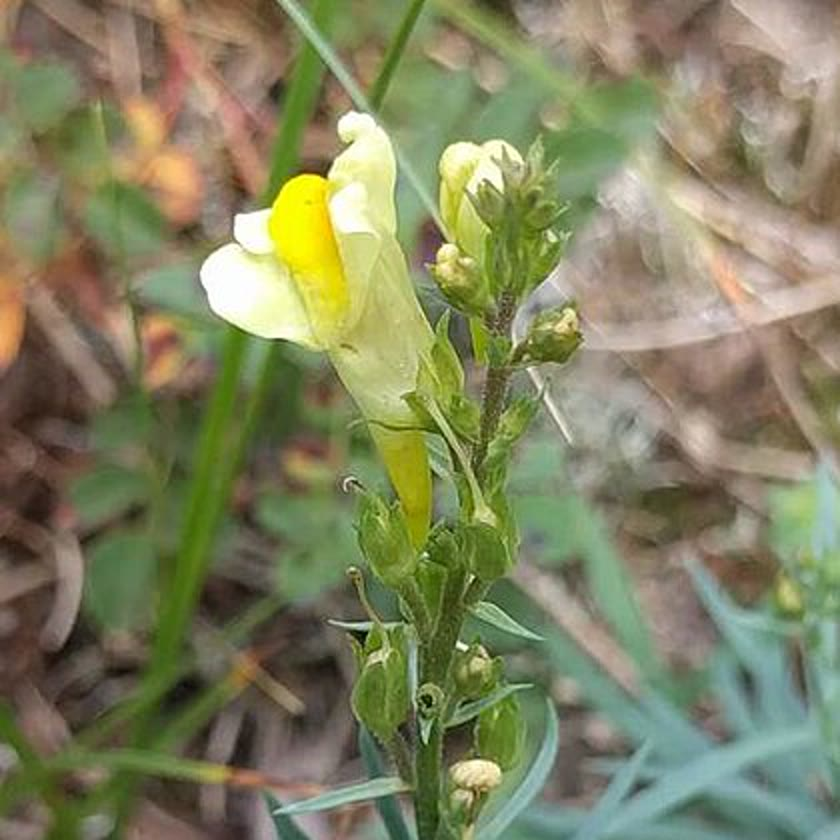

基因表达与性状的关系
本期导读
两条途径 · 细胞分化 · 表观遗传

视频原话 · 导读3 句
- 同学们好！这节课梳理人教版必修二第四章第二节——基因表达与性状的关系。7.8s
- 高考常考基因控制性状的两条途径、细胞分化的实质和表观遗传。6.6s
- 我们按六个考点梳理，每个考点都讲清楚怎么考、怎么做。5.5s
基因控制酶的合成01#
- 基因
- →酶
- →代谢过程
- →性状间接控制
- 白化病
- →酪氨酸酶基因异常
- →缺乏酪氨酸酶
- →不能合成黑色素
- 皱粒豌豆
- →插入一段 DNA淀粉分支酶基因
- →淀粉分支酶活性大大降低
- →淀粉含量低 → 失水皱缩
解题方法
出现“某种酶不能合成、代谢受阻” → 基因间接控制性状
视频原话4 句
- 考点一，基因通过控制酶的合成来控制代谢过程，进而间接控制生物体的性状。7.6s
- 例一，白化病：控制酪氨酸酶的基因异常，不能合成酪氨酸酶，酪氨酸不能转变为黑色素。8.8s
- 例二，皱粒豌豆：编码淀粉分支酶的基因被插入了一段外来 DNA 序列，淀粉分支酶异常、活性大大降低，淀粉含量降低，豌豆成熟时失水皱缩。14.4s
- 解题方法：题中出现“某种酶”不能合成、代谢受阻，就是间接控制。6.8s
基因控制蛋白质结构02#
- 基因
- →蛋白质的结构
- →性状直接控制
- 囊性纤维化
- →CFTR 基因缺失 3 个碱基对
- →CFTR 蛋白结构异常
- →转运氯离子功能异常
- 镰状细胞贫血
- →血红蛋白基因突变
- →一个氨基酸被替换
- →红细胞呈镰刀状
解题方法
结构蛋白、载体蛋白、血红蛋白等非酶蛋白结构改变 → 直接控制性状
视频原话4 句
- 考点二，基因通过控制蛋白质的结构，直接控制生物体的性状。6.0s
- 例一，囊性纤维化：编码 CFTR 蛋白的基因缺失了 3 个碱基对，CFTR 蛋白第 508 位缺少苯丙氨酸，空间结构改变，转运氯离子的功能异常。14.5s
- 例二，镰状细胞贫血：血红蛋白中一个氨基酸被替换，红细胞变成镰刀状。7.6s
- 解题方法：结构蛋白、载体蛋白、血红蛋白这类非酶蛋白结构改变，是直接控制。8.3s
选择性表达与分化03#
| 鸡的基因 | 输卵管细胞 | 红细胞 | 胰岛细胞 |
|---|---|---|---|
| 核糖体蛋白基因 | 表达 | 表达 | 表达 |
| 卵清蛋白基因 | 表达 | 不表达 | 不表达 |
| 珠蛋白基因 | 不表达 | 表达 | 不表达 |
| 胰岛素基因 | 不表达 | 不表达 | 表达 |
细胞分化的实质：基因的选择性表达
易错
鸡的胰岛细胞中也有卵清蛋白、珠蛋白基因，只是不表达；细胞分化不改变遗传物质
视频原话4 句
- 考点三，基因的选择性表达与细胞分化。同一个体的不同细胞，遗传物质相同，但表达的基因不完全相同。10.3s
- 一类基因在所有细胞中都表达，比如核糖体蛋白基因、ATP 合成酶基因；另一类只在某类细胞中特异性表达，比如卵清蛋白基因、胰岛素基因。13.8s
- 细胞分化的实质，就是基因的选择性表达。4.2s
- 易错：鸡的胰岛细胞中也有卵清蛋白基因和珠蛋白基因，只是不表达；细胞分化不改变遗传物质。9.4s
表观遗传的实例04#
- 1柳穿鱼两种花形的植株，Lcyc 基因碱基序列相同
- 2区别一种植株的 Lcyc 基因高度甲基化，不表达 → 花形不同
- 3小鼠毛色Avy 基因前端甲基化程度不同 → 毛色从黄到黑深浅不一
表观遗传：基因的碱基序列不变，但基因表达和表型发生可遗传变化
视频原话4 句
- 考点四，表观遗传的实例。柳穿鱼两种花形不同的植株，Lcyc 基因的碱基序列完全相同。9.4s
- 区别是：一种植株的 Lcyc 基因被高度甲基化，不能表达，花形就不同。7.6s
- 小鼠毛色也是这样：Avy 基因前端的甲基化程度不同，小鼠毛色从黄色到黑色深浅不一。8.9s
- 考法：表观遗传是生物体基因的碱基序列保持不变，但基因表达和表型发生可遗传变化的现象。9.1s
表观遗传的机制05#
DNA 甲基化
某些碱基连接甲基基团 → 抑制表达
如柳穿鱼 Lcyc、小鼠 Avy
组蛋白修饰
组蛋白甲基化、乙酰化等 → 影响基因表达
特点
可遗传；碱基序列不变；受环境影响
如吸烟使精子 DNA 甲基化水平升高
易错
甲基化不改变碱基序列，不是基因突变；主要抑制转录，而不是 DNA 复制
视频原话4 句
- 考点五，表观遗传的机制。DNA 甲基化：DNA 的某些碱基连接上甲基基团，抑制基因的表达。9.6s
- 此外，构成染色体的组蛋白发生甲基化、乙酰化等修饰，也会影响基因表达。7.6s
- 表观遗传的特点：可遗传；碱基序列不变；而且可能受环境影响，比如吸烟会使精子 DNA 甲基化水平升高。10.7s
- 易错：甲基化不改变碱基序列，所以不是基因突变；它主要抑制的是转录，而不是 DNA 复制。9.2s
基因与性状的关系06#
- 1基因与性状不是简单的一一对应关系
- 2一个基因 → 多个性状；一个性状 ← 多个基因（如身高）
- 3基因与基因、基因与基因产物、基因与环境相互作用，调控性状
考法
表型 ＝ 基因型 ＋ 环境；水毛茛水中叶与空气中叶形态不同，是环境的影响
视频原话4 句
- 考点六，基因与性状的关系。基因与性状不是简单的一一对应关系。6.9s
- 一个基因可以影响多个性状；一个性状也可以受多个基因的影响，比如人的身高。7.4s
- 基因与基因、基因与基因产物、基因与环境之间相互作用，精细地调控着生物体的性状。8.4s
- 考法：表型 = 基因型 + 环境。同一株水毛茛，水中和空气中的叶形不同，就是环境的影响。9.2s
易错速查✓
先自己判断，再点按钮查看对错与解析。
- 1白化病是基因通过控制蛋白质结构直接控制性状说法错误：是通过控制酶（酪氨酸酶）的合成间接控制
- 2囊性纤维化是基因通过控制蛋白质结构直接控制性状说法正确。
- 3细胞分化过程中遗传物质发生了改变说法错误：遗传物质不变，是基因的选择性表达
- 4DNA 甲基化改变了基因的碱基序列说法错误：碱基序列不变，但影响基因表达
- 5表观遗传的性状可以遗传给后代说法正确。
- 6一个基因只能控制一种性状说法错误：一个基因可影响多种性状，一种性状也可受多个基因影响
序列不变，表达可变！
视频原话 · 易错速查5 句
- 最后，用六道判断题检验一下。3.6s
- 判断一？错，白化病是通过控制酶的合成间接控制。判断二？对。8.0s
- 判断三？错，遗传物质不变。判断四？错，甲基化不改变碱基序列。8.3s
- 判断五？对。判断六？错，基因与性状不是一一对应的。7.2s
- 六个考点串成一条线：序列不变，表达可变。我们下期再见！6.4s
图片来源
图片来源：Wikimedia Commons —— Michel Langeveld《Linaria vulgaris 150731013》CC BY-SA 4.0（裁切）
Photo: Michel Langeveld, CC BY-SA 4.0